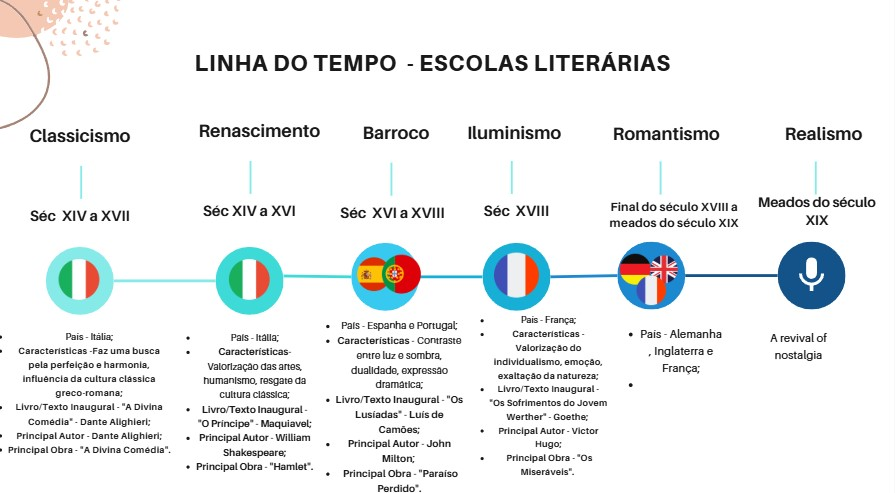

. jpg.jpg)
Atividade sobre as Escolas Literárias - Cronologia
A partir da pesquisas sobre as escolas Literárias, montamos uma cronologia a partir do século 15 e 17 até meados do século 19.

Linha do tempo - Escolas literais
Assim fizemos uma ordem cronologica da primeira escola literaria até a ultimaa já vista, onde botamos a nacionalidade, características, autores principais e entre outros.